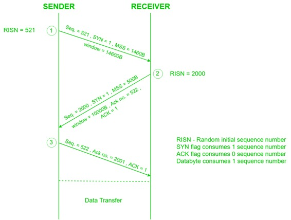

先决条件 - TCP 3路握手过程
TCP是面向连接的协议，并且每个面向连接的协议都需要建立连接以便在通信端保留资源。
连接建立 -
- 发件人通过以下方式启动该流程：
- 序列号（Seq = 521）：包含在发送方生成的随机初始序列号。
- Syn标志（Syn = 1）：请求接收器将其序列号与上面提供的序列号同步。
- 最大段大小（MSS = 1460 B）：发送方告诉其最大段大小，以便接收方发送不需要任何碎片的数据报。 MSS字段存在于TCP头中的Option字段内。
- 窗口大小（窗口= 14600 B）：发送者告诉他必须存储来自接收者的消息的缓冲容量。
- TCP是全双工协议，因此发送方和接收方都需要一个窗口来接收彼此之间的消息。
- 序列号（Seq = 2000）：包含在接收方生成的随机初始序列号。
- Syn标志（Syn = 1）：请求发送方将其序列号与上面提供的序列号同步。
- 最大段大小（MSS = 500 B）：发送方告知其最大段大小，以便接收方发送不需要任何碎片的数据报。 MSS字段存在于TCP头中的Option字段内。
由于MSS 接收器 <MSS 发送器 ，双方同意最小MSS，即500B，以避免两端的分组碎片。Therefore, receiver can send maximum of 14600/500 = 29 packets. This is the receiver's sending window size.
- 窗口大小（窗口= 10000 B）：接收器告诉他必须存储来自发送者的消息的缓冲容量。
Therefore, sender can send a maximum of 10000/500 = 20 packets. This is the sender's sending window size.
- Acknoledgement Number（Ack no。= 522）：由于序列号521由接收器接收，因此它向Ack no。= 522发出下一个序列号的请求，这是接收器预期的下一个分组，因为Syn标志消耗1个序列号。
- ACK标志（ACk = 1）：告知确认号字段包含接收器预期的下一个序列。
- 发件人通过以下方式对连接建立做出最终答复：
- 序列号（Seq = 522）：由于序列号=第一步中的521且SYN标志消耗一个序列号，因此下一个序列号将为522。
- 确认号码（Ack no。= 2001）：由于发送方正在从序列号为2000的接收方确认SYN = 1数据包，因此预期的下一个序列号为2001。
- ACK标志（ACK = 1）：告知确认号字段包含发送方预期的下一个序列。

由于TCP的连接建立阶段使用3个数据包，因此也称为3路握手 （SYN，SYN + ACK，ACK）。
相关的下一篇文章 - TCP连接终止